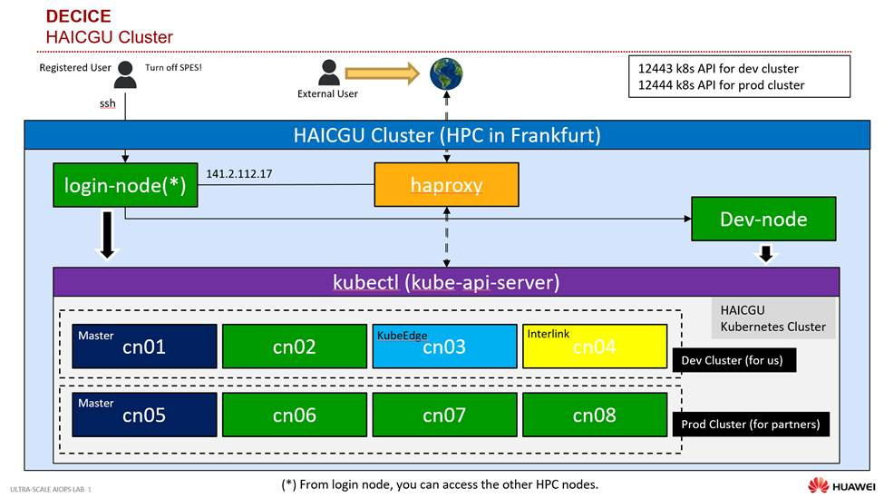
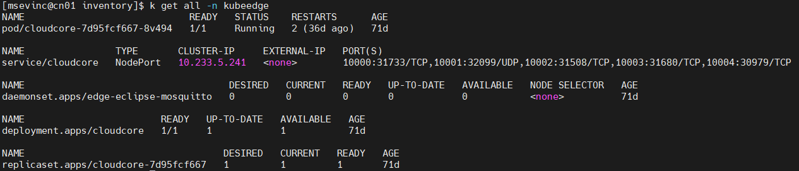
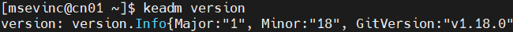
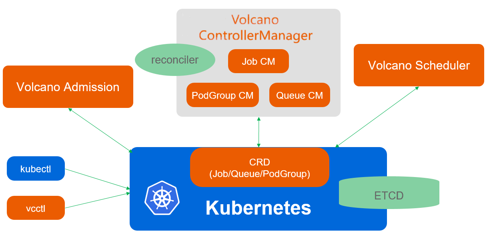
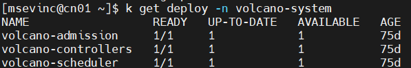
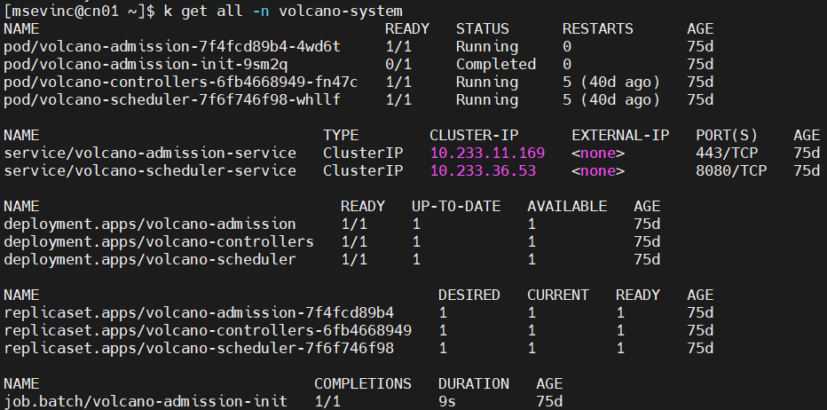

Kubernetes¶
Introduction¶
Kubernetes - Kubernetes is a powerful open-source system for managing containerized applications in a cloud environment.
KubeEdge - An open source system for containerized application orchestration for resources in Cloud and Edge. It is built upon Kubernetes and extends native containerized application orchestration and device management to hosts at the edge.
SEDNA - An open source edge-cloud synergy AI project targeting optimisation and utilization of resources across Cloud-Edge for AI training workloads.
Volcano - an open source system built on top of Kubernetes to support high performance batch & elastic workloads. Volcano supports popular computing frameworks such as Spark, TensorFlow, PyTorch, Flink, Argo, MindSpore.
The Kubernetes Cluster (HAICGU: Huawei AI and Computing at Goethe University) that is being created at this stage is as follows.
{kind=link}
Access¶
To access Kubernetes and other installed componenets
ssh guoehi-dev
ssh cn05
export KUBECONFIG=/etc/kubernetes/admin.conf
which kubectl
kubectl cluster-info
To Access the kubernetes nodes, namespaces and Pods
kubectl get no
kubectl get ns
kubectl get po -A
KubeEdge¶
KubeEdge is an open source framework for edge computing built on Kubernetes that is an incubation-level CNCF project. KubeEdge helps developers deploy and manage containerized applications in the cloud and on the edge using the same unified platform. KubeEdge handles networking, deployment and data synchronization between edge and cloud infrastructure.
Prerequisites
Kubernetes
KubeEdge is designed to extend Kubernetes from cloud to edge, and while it’s built upon Kubernetes’ architecture, it’s important to note that having an existing Kubernetes control plane is essential for deploying KubeEdge. This means that to use KubeEdge effectively, one must have a Kubernetes control plane in place.
Container Runtime
You need to install a container runtime into each edge node in the cluster so that the edge engine EdgeCore can be installed successfully and edge Pods can run there.
Installing KubeEdge with Keadm
Use the GitHub release to download the keadm binary. KubeEdge GitHub officially holds three architecture releases: amd64, arm, and arm64. Please download the correct package according to your platform and desired version.
wget https://github.com/kubeedge/kubeedge/releases/download/v1.17.0/keadm-v1.17.0-linux-amd64.tar.gz tar -zxvf keadm-v1.17.0-linux-amd64.tar.gz cp keadm-v1.17.0-linux-amd64/keadm/keadm /usr/local/bin/keadm
Setup Cloud Side (KubeEdge Master Node)
keadm init provides a solution for integrating the CloudCore Helm chart. CloudCore will be deployed to cloud nodes in container mode.
Example:
keadm init --advertise-address="THE-EXPOSED-IP" --kubeedge-version=v1.17.0 --kube-config=/root/.kube/config Output: Kubernetes version verification passed, KubeEdge installation will start... CLOUDCORE started =========CHART DETAILS======= NAME: cloudcore LAST DEPLOYED: Wed Oct 26 11:10:04 2022 NAMESPACE: kubeedge STATUS: deployed REVISION: 1
Setup Edge Side (KubeEdge Worker Node)
Run keadm gettoken on the cloud side to retrieve the token, which will be used when joining edge nodes.
# keadm gettoken 27a37ef16159f7d3be8fae95d588b79b3adaaf92727b7keadm join installs EdgeCore. It also provides a flag to set a specific version. It pulls the image kubeedge/installation-package from Docker Hub, copies the edgecore binary from container to the hostpath, and then starts edgecore as a system service.
Example:
keadm join --cloudcore-ipport="THE-EXPOSED-IP":10000 --token=27a37ef16159f7d3be8fae95d588b79b3adaaf92727b7 --kubeedge-version=v1.12.1You can run kubectl get all -n kubeedge to ensure that CloudCore start successfully, as shown below.

Installing KubeEdge with Ansible
Two playbooks have been created for KubeEdge to be installed on the cloud and edge side via ansible playbooks. In decie-spray repository, the playbooks are present. You just need to run:
source /home/msevinc/ansible-git/ansible-venv/bin/activate ansible-playbook -i inventory/decice-mehmet/hosts.yaml --become --become-user=root -u msevinc playbooks/kubeedge-cloudcore-install.yaml ansible-playbook -i "192.168.23.13," --become --become-user=root -u msevinc playbooks/kubeedge-edgecore-install.yaml
{kind=link}
Sedna¶
Deploying machine learning models is another common use case for edge computing. By moving your model to an edge device, you not only reduce bandwidth costs and latency but also gain the advantage of better privacy and security because data isn’t leaving the device or edge location to be analyzed.
KubeEdge provides its own toolkit called Sedna to make deploying models from popular machine learning frameworks like Tensorflow and Pytorch easier.
KubeEdge provides the connection between the edge nodes and the cloud. Sedna enables running AI models on these edge nodes.
Sedna’s edge-cloud synergy is implemented based on the following capabilities provided by KubeEdge:
Unified orchestration of across edge-cloud applications.
Router: across edge-cloud message channel in management plane.
EdgeMesh: across edge-cloud microservice discovery and traffic governance in data plane.
Prerequisites
Kubectl with right kubeconfig
Kubernetes 1.16+ cluster running
KubeEdge v1.8+ along with EdgeMesh running
EdgeMesh, as the data plane component of the KubeEdge cluster, provides simple service discovery and traffic proxy functions for applications, thereby shielding the complex network structure in edge scenarios.
Installing EdgeMesh with Helm
Make sure you have installed Helm 3. Remove the taint of the K8s master nodes
$ kubectl taint nodes --all node-role.kubernetes.io/master-Add filter labels to Kubernetes API services
$ kubectl label services kubernetes service.edgemesh.kubeedge.io/service-proxy-name=""To generate a PSK cipher, you can use the following command to generate a random string to use as the PSK cipher, or you can customize a string to use as the PSK cipher.
$ openssl rand -base64 32 <your psk string> helm install edgemesh --namespace kubeedge \ --set agent.psk=<your psk string> \ --set agent.relayNodes[0].nodeName=<your node name>,agent.relayNodes[0].advertiseAddress=<your advertise address list> \ https://raw.githubusercontent.com/kubeedge/edgemesh/main/build/helm/edgemesh.tgz
Installing Sedna
Currently GM (Global Manager) is deployed as a deployment, and LC (Local Controller) is deployed as a daemonset. Run the one liner:
curl https://raw.githubusercontent.com/kubeedge/sedna/main/scripts/installation/install.sh | SEDNA_ACTION=create bash -Check the GM status:
kubectl get deploy -n sedna gmCheck the LC status:
kubectl get ds lc -n sednaGlobalManager:
Unified edge-cloud synergy AI task management
Cross edge-cloud synergy management and collaboration
Central Configuration Management
LocalController
Local process control of edge-cloud synergy AI tasks
Local general management: model, dataset, and status synchronization
{kind=link}
Volcano¶
Volcano is a cloud native system for high-performance workloads. It is a container batch scheduling project built on Kubernetes. It provides a suite of mechanisms that are commonly required by many classes of batch & elastic workload including: machine learning/deep learning, bioinformatics/genomics and other “big data” applications. These types of applications typically run on generalized domain frameworks like TensorFlow, Spark, Ray, PyTorch, MPI, etc, which Volcano integrates with.
Volcano consists of scheduler / controllermanager / admission / vcctl.

Prerequisites
Kubernetes 1.12+ with CRD support.
Installing Volcano with YAML Files
Install Volcano on an existing Kubernetes cluster. This way is both available for x86_64 and arm64 architecture.
kubectl apply -fVerify status of Volcano components.

Installing Volcano with Ansible
One playbook has been created for Volcano to be installed on the HIACGU Kubernetes Cluster. The playbook is in the decie-spray repository. You just need to run:
source /home/msevinc/ansible-git/ansible-venv/bin/activate ansible-playbook -i inventory/decice-mehmet/hosts.yaml --become --become-user=root -u msevinc playbooks/volcano-install.yaml
{kind=link}
{kind=link}
{kind=link}